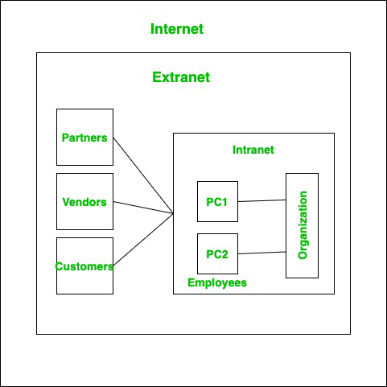

Extranet
- Extranet
- A private network that extends an organization's intranet to include authorized users outside the organization, such as partners, suppliers, or customers.
- It allows controlled access to specific resources and information while maintaining security and privacy.
- Extranets can facilitate collaboration and communication between different organizations, enabling them to share data, applications, and services.
- Access to an extranet is typically granted through secure authentication methods, such as usernames and passwords or virtual private networks (VPNs).
